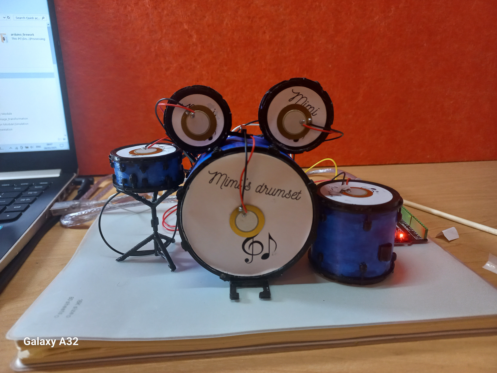
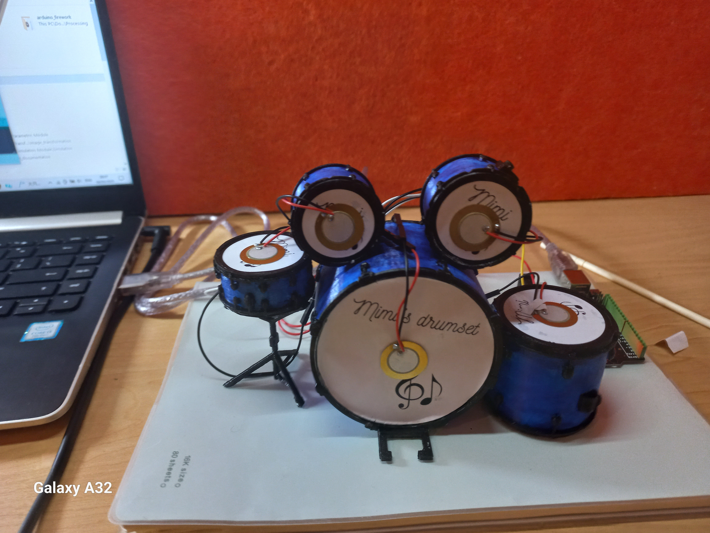
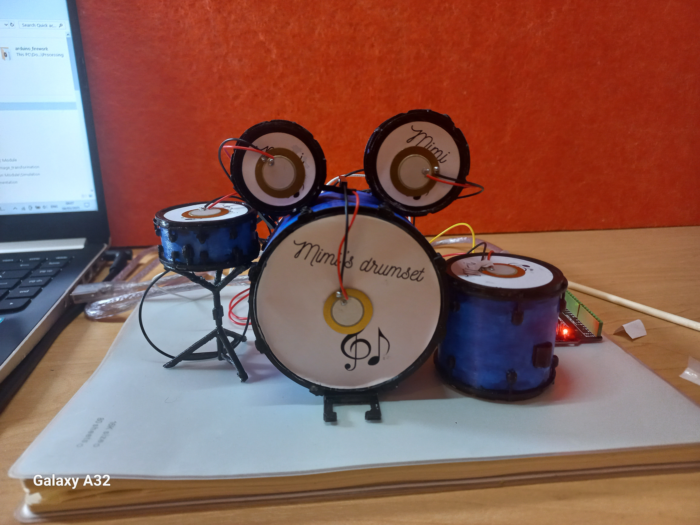
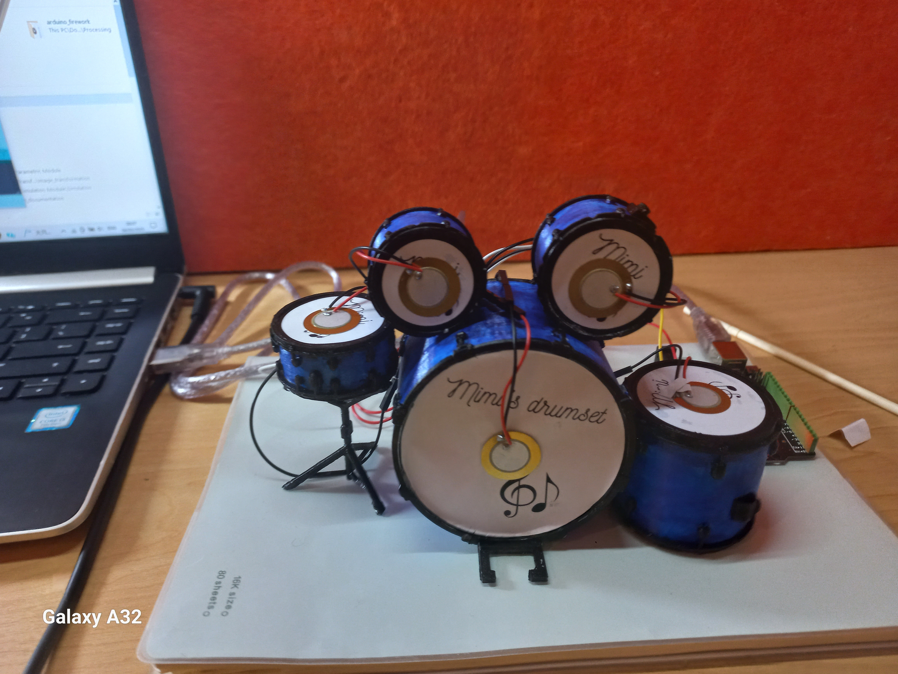

Project 1: Home plant Management System
This project is a soil health and temperature monitoring system for home plants. It uses three LEDs red, yellow, and green to indicate soil moisture levels, with a buzzer that sounds different alerts when the soil is dry or nearing dryness. A temperature sensor controls an RGB LED: it glows orange or blue for high or low temperatures and triggers an SOS light pattern with a buzzer tune at extreme conditions. A pushbutton allows the user to silence the buzzer. This system helps plant owners respond quickly and keep their plants healthy.


Project 2: Drum Controlled Virtual Firework Display
This project uses piezo disks embedded in small drum pads and a potentiometer to control an interactive firework display. Each piezo acts as a drum trigger: hitting a drum sends data to Processing, which generates a corresponding firework effect while the buzzer plays an explosive sound. The bass drum triggers a single firework, the floor tom creates multiple fireworks in random screen positions, the snare controls firework spread, the mid tom changes the firework color, and the hi tom changes its shape. The potentiometer adjusts overall firework behavior. This system lets users “play” fireworks like a drum set.
 


